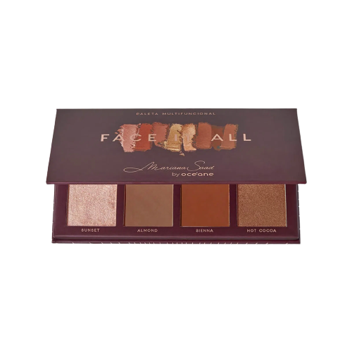

Produtos
Base Mate Boca Rosa R$:55,90
.png)
DESCRIÇÃO: A base boca rosa beauty, da payot, vai entregar alta cobertura à sua make,
deixando um efeito matte e aveludado. com acabamento profissional e disfarce óptico,
ela garante uma pele uniforme e texturizada. é resistente à água e possui longa duração,
além de não marcar linhas de expressão, acumular, craquelar ou transferir.
Paleta Multifuncional Mariana Saad R$:93,00 ou parcelado em 3x de R$:31,00

DESCRIÇÃO:Super coringa, a Paleta Multifuncional Face it All Mariana Saad by Océane,
conta com iluminador, contorno e blush. São 4 tons cintilantes e 4 tons matte,
todos com alta pigmentação e fixação. Perfeita para criar diferentes looks.
Blush Dior Backstage Rogy Glow R$: 299,00 ou parcelado em 10x sem juros
.png)
DESCRIÇÃO: O blush universal Rosy Glow é o segredo dos maquiadores Dior para recriar maçãs do rosto
que parecem naturalmente coloridas, frescas e como que reavivadas desde o interior.
Pó Solto Mari Maria Invisible Silk R$:44,00 ou parcelado em 2x de R$:22,00
.png)
DESCRIÇÃO: O Invisible Silk é um pó facial com textura fina e aveludada.
Possui partículas que promovem disfarce óptico, micropigmentos que ajudam a disfarçar imperfeições,
conferindo um aspecto natural. Contém Miniporyl®, que atua no equilíbrio da oleosidade da pele e Vitamina E,
antioxidante natural que ajuda na prevenção do envelhecimento.
Ideal para uma finalização perfeita da maquiagem, fixa, sela e permite a pele respirar.
Gloss Franciny Ehlke R$:31,90
.png)
DESCRIÇÃO:Transparente e com brilho na medida certa, o gloss FRAN By Franciny Ehlke GLOSSIP GIRL esculpe os lábios com transparência e brilho na medida certa. Com textura leve e confortável,
as pérolas proporcionam efeito adequado a todos os tons de pele.
O ácido hialurônico e D-pantenol presentes na fórmula,
protegem os lábios com potente ação hidratante e antioxidante.
O pincel em formato de flecha dispensa o produto na quantidade perfeita e facilita a aplicação.